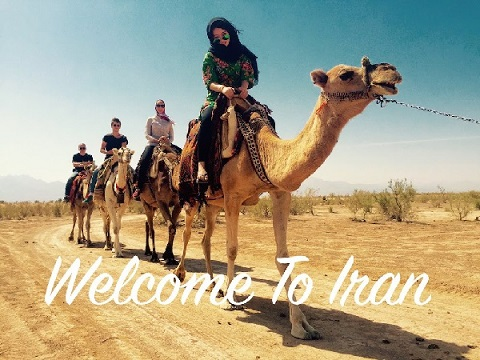
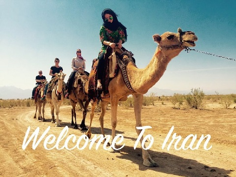

Welcome to my online scrapbook on Iran.
This website was made as a project for Mr. MacGregor's geography class and will teach you all about Iran's history, government, culture, and fun things to see and do if you go there.
This website was made as a project for Mr. MacGregor's geography class and will teach you all about Iran's history, government, culture, and fun things to see and do if you go there.
